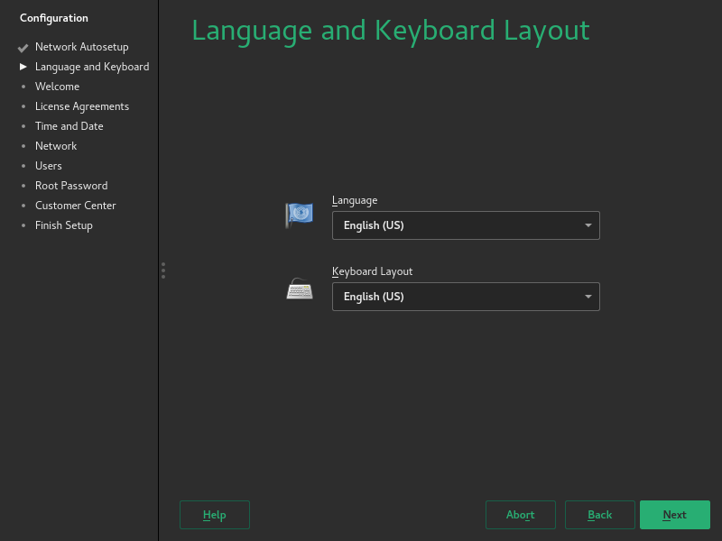
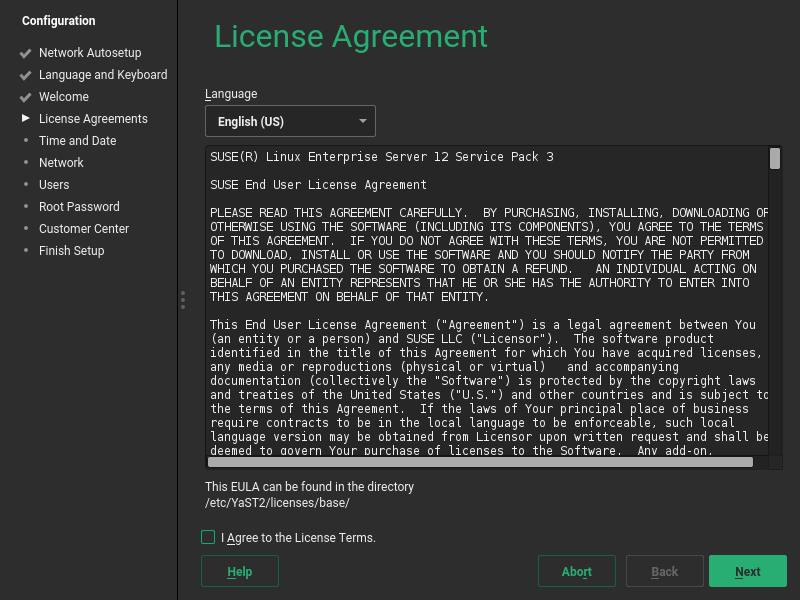
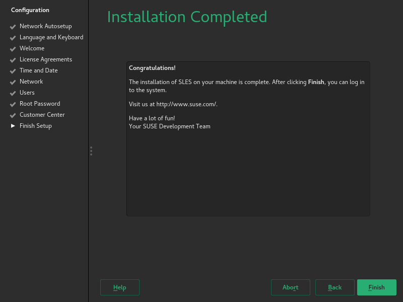
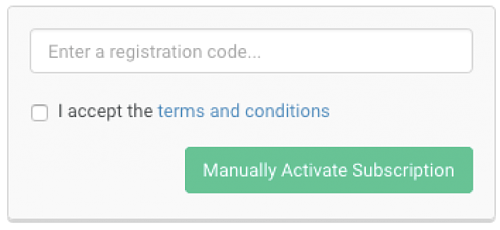

Abstract
This guide contains an overview of SUSE Linux Enterprise Server for ARM on the Raspberry Pi platform and will guide you through the setup procedure.
Disclaimer: Documents published as part of the SUSE Best Practices series have been contributed voluntarily by SUSE employees and third parties. They are meant to serve as examples of how particular actions can be performed. They have been compiled with utmost attention to detail. However, this does not guarantee complete accuracy. SUSE cannot verify that actions described in these documents do what is claimed or whether actions described have unintended consequences. SUSE LLC, its affiliates, the authors, and the translators may not be held liable for possible errors or the consequences thereof.
Table of Contents
To be able to use SUSE Linux Enterprise Server for ARM on the Raspberry Pi, an Arm compatible Raspberry Pi* is required. SUSE Linux Enterprise Server 12 SP3 for ARM is tested to work on a Raspberry Pi 3 Model B board.
The Raspberry Pi is a series of small single-board computers based on a System on a Chip (SoC) by Broadcom*, featuring various peripherals on the board.
Figure 1. Overview of the Raspberry Pi 3 Model B Connectors, © Efa / English Wikipedia / CC BY-SA 3.0
 |

Selected Features of the Raspberry Pi 3 Model B
- CPU
The Broadcom BCM2837 SoC includes a quad-core Arm* Cortex*-A53 Application Processor supporting the ARMv8 32-bit and 64-bit instruction sets. With the default configuration, it is clocked up to 1.2 GHz.
- RAM
1024 MiB DDR2 memory mounted on the back of the board.
- Graphics
Broadcom* VideoCore* IV providing OpenGL* ES 2.0 support. Displays can be connected over HDMI or composite (TRRS jack).
- Ethernet
A USB Ethernet adapter on the board provides 10/100 MBit/s Ethernet.
- WLAN
The BCM43438 chip supports IEEE-802.11b, IEEE-802.11g and IEEE-802.11n in the 2.4 GHz band. It also provides Bluetooth 2.0-4.1 (Low Energy).
- Storage
The microSDHC card slot allows for a memory card to be inserted as primary boot medium.
- Power
The Raspberry Pi's main power source is the Micro USB connector. If your Raspberry Pi comes with a power supply, it is recommended to use the bundled power supply only.
- USB
A total of four USB 2.0 ports is available.
- Connectors
A 0.1 inch multi-function pin header is also available. Note that not all functionality of this header is exposed in SUSE Linux Enterprise Server for ARM on the Raspberry Pi.
SUSE Linux Enterprise Server for ARM 12 SP3 is the first fully supported commercial Linux operating system release available for the Raspberry Pi. You can purchase subscriptions which entitle you to receive all released bug and security fixes, feature updates, and technical assistance from SUSE's worldwide support. Learn more about subscription and support options at https://www.suse.com/support/programs/subscriptions/?id=SUSE_Linux_Enterprise_Server
Trial Version
If you want to try out SUSE Linux Enterprise Server for ARM 12 SP3 on the Raspberry Pi, SUSE will provide you with a trial version. This gives you access to free patches and updates for a period of 60 days. You must sign in to the SUSE Customer Center at https://scc.suse.com/login using your Customer Center account credentials to receive this free offer. If you do not have a Customer Center account, you must create one to take advantage of the trial version.
Minimum System Requirements for Installation
Raspberry Pi 3 Model B
SD Card with at least 8GB capacity
USB keyboard, mouse
HDMI cable and monitor
Power supply with at least 2.5A capacity
The previous release of “SUSE Linux Enterprise Server for the Raspberry Pi” (based on SUSE Linux Enterprise Server 12 SP2) was intended for experimental users of SUSE Linux Enterprise Server on the Raspberry Pi platform. It included several large packages such as the C compiler and development tools. The commercial release of the Raspberry Pi image of SUSE Linux Enterprise Server for ARM is different in several ways:
It is based on the later code base from SUSE Linux Enterprise Server 12 SP3.
It uses the normal SUSE Linux Enterprise Server for ARM support channels instead of a special purpose “SUSE Linux Enterprise Server for the Raspberry Pi” channel.
The image is significantly smaller than the previous release to allow the installation to be tailored for the actual use.
Additional packages can be installed by YaST or Zypper after registration. Since many of our customers are interested in using SUSE Linux Enterprise Server for ARM on a Raspberry Pi for industrial monitoring and digital signage, it makes more sense to provide a minimal image that can easily be expanded.
Raspbian is the de-facto default distribution for the Raspberry Pi. The following paragraphs provide a short overview of differences between SUSE Linux Enterprise Server for ARM on the Raspberry Pi and Raspbian.
- Based on Upstream Kernel
Raspbian uses a kernel with modifications especially for the Raspberry Pi. SUSE Linux Enterprise Server for ARM uses the default SUSE Linux Enterprise kernel for AArch64 which is derived from the official mainline kernel.
- AArch64 Instruction Set
SUSE Linux Enterprise Server for ARM on the Raspberry Pi is the first distribution for the Raspberry Pi using the AArch64 instruction set.
- Boot Process
In Raspbian, the kernel is loaded directly. This is not supported by SUSE Linux Enterprise Server for ARM, where the U-Boot boot loader is used to provide an EFI boot environment. A GRUB2 EFI binary is chainloaded to provide a graphical boot screen.
- Root File System
SUSE Linux Enterprise Server for ARM on the Raspberry Pi uses Btrfs as file system for the root partition. Compression is enabled by default for better SD card performance.
YaST is the installation and configuration framework
for SUSE Linux Enterprise. It is popular for its easy use, flexible graphical
interfaces and the capability to customize your system quickly
during and after the installation. YaST can be used to
configure your entire system: You can configure hardware, set up
networking, manage system services and tune your security
settings. All these tasks can be reached from the YaST
control center. To start it, choose YaST in the menu or run
the command xdg-su -c yast2. You will be
prompted to enter the password of the root user.
When started, YaST shows an overview of available modules (Figure 3, “The YaST Control Center”). Simply click an icon to open a module.
Zypper is the package manager for SUSE Linux Enterprise. It is the tool for installing, updating and removing packages and for managing repositories.
The general syntax for Zypper invocations is:
zypper[global-options]command[command-options][arguments]...
Short Command Form
For most commands, there is both a short and a long form. An overview is available with zypper --help.
- Installing a package
zypper install mplayer
- Removing a package
zypper remove mplayer
- List available patches
zypper list-patches
- Install available patches
zypper patch
Installing Software Updates
The recommended way to install available software updates is using the YaST Online Updater. To start it, choose “Online Update” in “Settings” under “Desktop Apps” in the IceWM menu.
- Graphics not hardware-accelerated
X.Org hardware acceleration is disabled to improve system stability and reliability.
To enable it, comment out the following line in
/etc/X11/xorg.conf.d/20-kms.conf:Option "AccelMethod" "none"by prefixing it with “#”.
For other limitations refer to the online version of the Release Notes at https://www.suse.com/releasenotes/x86_64/SUSE-SLES/12-SP3/.
SUSE Linux Enterprise Server for the Raspberry Pi is distributed as XZ-compressed image file for microSD cards. This section will guide you through the process of preparing the card to the first boot. If you already have a microSD card containing the image, you can skip this section and go straight to the section called “Booting for the First Time”.
SD Card Space Requirements
It is recommended to use a card with a capacity of at least 8 GB.
All Data on the Card will be Lost!
By following the procedure below, all data on the SD card will be overwritten and therefore irrevocably lost! Be very careful when choosing the destination device of the image writing process!
Before and after you plug in the SD card, run the lsblk command. Between the two runs of lsblk, there should be a difference of one or more lines. The first column and first row is the name of the node representing the SD card in your system. To write the image to the card, use the dd command:
xz -cdIMAGE| dd of=/dev/SDCARDDEVbs=4096
Example 1. Writing the Image to the Card using dd
This command decompresses the image
SLE-12-SP3-Server-RaspberryPi3.aarch64-GM.raw.xz
to the SD card mmcblk0.
xz -cd SLE-12-SP3-Server-RaspberryPi3.aarch64-GM.raw.xz | dd of=/dev/mmcblk0 bs=4096
The following steps will guide you through the installation of the image onto the SD card on Microsoft Windows operating systems. You need to meet these prerequisites:
Latest available image of SUSE Linux Enterprise Server for ARM on the Raspberry Pi
Easy 7-Zip from http://www.e7z.org/
Win32 Disk Imager from http://sourceforge.net/projects/win32diskimager/
Open the downloaded image using Easy 7-Zip. Extract the file content into a directory with sufficient free space.
Run Win32 Disk Imager and select the extracted file as . Then, choose the correct drive letter as . Click to start the procedure.

Finding the correct device
If you are unsure which drive letter to choose from in the list, remove the SD card and run Win32 Disk Imager again. The option that disappeared is the right target device.
The following steps will guide you through the installation of the image onto the SD card on macOS. You need to meet these prerequisites:
Latest available image of SUSE Linux Enterprise Server for ARM on the Raspberry Pi
The Unarchiver from http://unarchiver.c3.cx/unarchiver
Open Finder at the location where the downloaded image is stored. Use the selection to choose The Unarchiver instead of the default Archive utility and extract the content into a directory with sufficient free space.

Open a Terminal window and change into the destination directory of the uncompressed image. Enter diskutil list before and after the SD card is inserted to find out which device to use.
Run diskutil unmountDisk
/dev/diskX, where X is the disk number from the previous step.Run sudo dd bs=4096 if=
imageFile.rawof=/dev/diskX, where X is the disk number and imageFile.raw is the name of the uncompressed image.tux >sudo dd bs=4096 if=SLE-12-SP3-Server-RaspberryPi3.aarch64-GM.raw.xz of=/dev/disk4 Password: 5550+0 records in 5550+0 records out 5819596800 bytes transferred in 1131.796649 secs (5141910 bytes/sec)Now unmount the disk (which is now labelled ) as usual.
After insertion of the prepared microSD card, connect a display, Ethernet and USB keyboard and mouse first, then provide power over Micro USB. After a few seconds you should be able to see a few lines of text on the screen. If that is not the case, recheck the connection to the display.
Operation Without Mouse
YaST can be used without a mouse by only using the keyboard. Every GUI element has an accelerator configured, visible as underlined letter. To activate such an accelerator, press the letter together with Alt.
On the first boot, the system will expand to fill the entire SD card, so be patient.
After a few minutes, YaST will lead you through the initial system setup.
First, the system language and keyboard layout needs to be configured. Use the drop-down boxes and click .
 Select on this screen.

Read the License Agreement. You need to accept the license by selecting and choosing .
 Select the time zone either by clicking the area in the map or selecting region and zone in the drop-down boxes.

If the time and date shown at the bottom on the screen are incorrect, setup the Network Time Protocol client by following these steps:
Click to open the NTPD configuration.
Click to synchronize date and time with NTPD.
After the synchronization completed, click to return to the Time and Date overview.
Click to proceed.
On this page, you can configure a default user account.

Automatic Login not supported
Automatic Login is not supported by xdm, the default display manager. Install gdm after the installation to make it work.
If you chose to skip the previous step or if you chose not to set a root password, you will be asked to provide one now. Do not forget what you enter here, you will need it for administration!
On this screen you need to enter your E-mail address and the registration code you received. You can also choose to .

Skipping the Registration
If you choose to skip the registration here, you will not receive updates or patches until you registered manually using YaST.
After successful registration you will be given the option to activate Modules as additional package repositories. For example the Toolchain Module provides the supported versions of the GNU Compiler Collection for SUSE Linux Enterprise Server for ARM 12 SP3.
Click to exit the setup wizard and continue the system start-up.

When the system finished booting, you will see the following login screen:

Type in the user name and password you chose during the initial configuration. The default IceWM desktop starts. By using the menu, you can start an XTerm terminal:
After the initial configuration procedure and the first boot of the system, you can now use various components of the system.
The Raspberry Pi has a Bluetooth* controller on-board that can be used for various purposes, like wireless keyboards, mice or audio devices.
To enable the Bluetooth* controller for use with bluetoothctl and related applications, run:
root # hciattach /dev/ttyAMA0 bcm43xx 921600
bcm43xx_init
Flash firmware /lib/firmware/BCM43430A1.hcd
Set Controller UART speed to 921600 bit/s
Device setup completeYou can then use hciconfig hci0 up to bring the device up and use hcitool scan to scan the environment for discoverable devices.
In this section it is explained how to perform the initial system configuration for SUSE Linux Enterprise Server for ARM 12 SP3 on the Raspberry Pi.
Follow these steps to change the default host name:
The default configuration has DHCP enabled on the Ethernet port. If that suits your network environment, you can skip this section. If you require the use of a static IP address, use YaST:
Open the YaST network module either by running yast2 lan or clicking the network icon in the YaST control center.
In YaST, you will see the network interface being selected. Select the built-in Ethernet and choose to open the address configuration.
Select and type in the desired values for and . Click .
With a static network configuration, you will also need to specify a DNS server (if applicable) and a gateway. For the gateway, select in the tab bar and enter the IPs of the gateways into the specific fields.
The DNS server is set in the tab. After choosing that tab, enter the IPs of the name servers into the respective fields.
Similarly to the procedure described above, YaST also lets you configure the built-in Wi-Fi network adapter.
For detailed information about the network configuration in SUSE Linux Enterprise Server, consult the respective sections of the SUSE Linux Enterprise Server Deployment Guide and the SUSE Linux Enterprise Server Administration Guide at https://documentation.suse.com/sles/12-SP3/. To access these guides, download the compressed documentation folder.
It is very important to register your SUSE Linux Enterprise Server for ARM subscription to ensure full functionality of your Raspberry Pi system. The SD card image provided by SUSE contains a minimal set of packages that are intended for the initial boot process and to get your Raspberry Pi onto the network.
When you have registered your SUSE Linux Enterprise Server for ARM subscription, you can download other packages you may need, such as compilers. The SUSE Linux Enterprise Server version that runs on your Raspberry Pi is the same version that runs on x86, Power, IBM Z, or on other Arm-based systems.
Setting the Clock
Because the Raspberry Pi does not have a persistent Real Time Clock, make sure that the clock is set to the current date and time before attempting to use Zypper or YaST to install additional packages.
You can register your system either during first boot or via the YaST Product Registration module.
Evaluation Code
Sixty day evaluation subscriptions may be requested at the following page: https://www.suse.com/products/arm/raspberry-pi/
After you obtained a registration code from a subscription card, you need to activate your subscription on the SUSE Customer Center at:
To register your subscription, perform the following steps:
Log in to the SUSE Customer Center using a browser on another machine. Create an account if required:

Click :

Click the dialog field :

Enter the registration code and accept the terms and conditions:
 Confirm the subscription activation and the organization assignment. Click :

Your subscription is now active and ready to be used:

This introduction only covered the most basic tasks.
You can find the complete documentation for SUSE Linux Enterprise Server 12 SP3 at https://documentation.suse.com/sles-12.
Applicability of Product Documentation
Not all content in the product documentation applies to SUSE Linux Enterprise Server for ARM on the Raspberry Pi, because the Raspberry Pi differs largely from other hardware platforms.
A valid and activated subscription entitles you to receive bug and security fixes, feature updates, and technical assistance from SUSE's support organization. Learn more at https://www.suse.com/support/. Via the SUSE Customer Center at https://scc.suse.com/login you can open an incident.
In addition, SUSE has provided conversation forums where you can get answers to questions. Go to https://forums.suse.com/. Under the main forum category SUSE Linux Enterprise Server select the sub-forum SLES for Raspberry Pi.
Forums Are No Official Support Channel
The SUSE Forum is no official support channel from SUSE. The individual articles or statements were contributed voluntarily by community members and users of the respective products. SUSE cannot verify either that the actions described in the articles do what they claim to do or that they do not have unintended consequences. Therefore, neither SUSE LLC, its affiliates, nor the authors may be held liable for possible errors or the consequences thereof.
Visit https://www.suse.com/support/ for more information about official support options.
Copyright ©2006-2021 SUSE LLC and contributors. All rights reserved.
Permission is granted to copy, distribute and/or modify this document under the terms of the GNU Free Documentation License, Version 1.2 or (at your option) version 1.3; with the Invariant Section being this copyright notice and license. A copy of the license version 1.2 is included in the section entitled “GNU Free Documentation License”.
SUSE, the SUSE logo and YaST are registered trademarks of SUSE LLC in the United States and other countries. For SUSE trademarks, see http://www.suse.com/company/legal/. Linux is a registered trademark of Linus Torvalds. All other names or trademarks mentioned in this document may be trademarks or registered trademarks of their respective owners.
Documents published as part of the SUSE Best Practices series have been contributed voluntarily by SUSE employees and third parties. They are meant to serve as examples of how particular actions can be performed. They have been compiled with utmost attention to detail. However, this does not guarantee complete accuracy. SUSE cannot verify that actions described in these documents do what is claimed or whether actions described have unintended consequences. SUSE LLC, its affiliates, the authors, and the translators may not be held liable for possible errors or the consequences thereof.
Below we draw your attention to the license under which the articles are published.
Copyright (C) 2000, 2001, 2002 Free Software Foundation, Inc. 51 Franklin St, Fifth Floor, Boston, MA 02110-1301 USA. Everyone is permitted to copy and distribute verbatim copies of this license document, but changing it is not allowed.
0. PREAMBLE
The purpose of this License is to make a manual, textbook, or other functional and useful document "free" in the sense of freedom: to assure everyone the effective freedom to copy and redistribute it, with or without modifying it, either commercially or non-commercially. Secondarily, this License preserves for the author and publisher a way to get credit for their work, while not being considered responsible for modifications made by others.
This License is a kind of "copyleft", which means that derivative works of the document must themselves be free in the same sense. It complements the GNU General Public License, which is a copyleft license designed for free software.
We have designed this License to use it for manuals for free software, because free software needs free documentation: a free program should come with manuals providing the same freedoms that the software does. But this License is not limited to software manuals; it can be used for any textual work, regardless of subject matter or whether it is published as a printed book. We recommend this License principally for works whose purpose is instruction or reference.
1. APPLICABILITY AND DEFINITIONS
This License applies to any manual or other work, in any medium, that contains a notice placed by the copyright holder saying it can be distributed under the terms of this License. Such a notice grants a world-wide, royalty-free license, unlimited in duration, to use that work under the conditions stated herein. The "Document", below, refers to any such manual or work. Any member of the public is a licensee, and is addressed as "you". You accept the license if you copy, modify or distribute the work in a way requiring permission under copyright law.
A "Modified Version" of the Document means any work containing the Document or a portion of it, either copied verbatim, or with modifications and/or translated into another language.
A "Secondary Section" is a named appendix or a front-matter section of the Document that deals exclusively with the relationship of the publishers or authors of the Document to the Document's overall subject (or to related matters) and contains nothing that could fall directly within that overall subject. (Thus, if the Document is in part a textbook of mathematics, a Secondary Section may not explain any mathematics.) The relationship could be a matter of historical connection with the subject or with related matters, or of legal, commercial, philosophical, ethical or political position regarding them.
The "Invariant Sections" are certain Secondary Sections whose titles are designated, as being those of Invariant Sections, in the notice that says that the Document is released under this License. If a section does not fit the above definition of Secondary then it is not allowed to be designated as Invariant. The Document may contain zero Invariant Sections. If the Document does not identify any Invariant Sections then there are none.
The "Cover Texts" are certain short passages of text that are listed, as Front-Cover Texts or Back-Cover Texts, in the notice that says that the Document is released under this License. A Front-Cover Text may be at most 5 words, and a Back-Cover Text may be at most 25 words.
A "Transparent" copy of the Document means a machine-readable copy, represented in a format whose specification is available to the general public, that is suitable for revising the document straightforwardly with generic text editors or (for images composed of pixels) generic paint programs or (for drawings) some widely available drawing editor, and that is suitable for input to text formatters or for automatic translation to a variety of formats suitable for input to text formatters. A copy made in an otherwise Transparent file format whose markup, or absence of markup, has been arranged to thwart or discourage subsequent modification by readers is not Transparent. An image format is not Transparent if used for any substantial amount of text. A copy that is not "Transparent" is called "Opaque".
Examples of suitable formats for Transparent copies include plain ASCII without markup, Texinfo input format, LaTeX input format, SGML or XML using a publicly available DTD, and standard-conforming simple HTML, PostScript or PDF designed for human modification. Examples of transparent image formats include PNG, XCF and JPG. Opaque formats include proprietary formats that can be read and edited only by proprietary word processors, SGML or XML for which the DTD and/or processing tools are not generally available, and the machine-generated HTML, PostScript or PDF produced by some word processors for output purposes only.
The "Title Page" means, for a printed book, the title page itself, plus such following pages as are needed to hold, legibly, the material this License requires to appear in the title page. For works in formats which do not have any title page as such, "Title Page" means the text near the most prominent appearance of the work's title, preceding the beginning of the body of the text.
A section "Entitled XYZ" means a named subunit of the Document whose title either is precisely XYZ or contains XYZ in parentheses following text that translates XYZ in another language. (Here XYZ stands for a specific section name mentioned below, such as "Acknowledgements", "Dedications", "Endorsements", or "History".) To "Preserve the Title" of such a section when you modify the Document means that it remains a section "Entitled XYZ" according to this definition.
The Document may include Warranty Disclaimers next to the notice which states that this License applies to the Document. These Warranty Disclaimers are considered to be included by reference in this License, but only as regards disclaiming warranties: any other implication that these Warranty Disclaimers may have is void and has no effect on the meaning of this License.
2. VERBATIM COPYING
You may copy and distribute the Document in any medium, either commercially or noncommercially, provided that this License, the copyright notices, and the license notice saying this License applies to the Document are reproduced in all copies, and that you add no other conditions whatsoever to those of this License. You may not use technical measures to obstruct or control the reading or further copying of the copies you make or distribute. However, you may accept compensation in exchange for copies. If you distribute a large enough number of copies you must also follow the conditions in section 3.
You may also lend copies, under the same conditions stated above, and you may publicly display copies.
3. COPYING IN QUANTITY
If you publish printed copies (or copies in media that commonly have printed covers) of the Document, numbering more than 100, and the Document's license notice requires Cover Texts, you must enclose the copies in covers that carry, clearly and legibly, all these Cover Texts: Front-Cover Texts on the front cover, and Back-Cover Texts on the back cover. Both covers must also clearly and legibly identify you as the publisher of these copies. The front cover must present the full title with all words of the title equally prominent and visible. You may add other material on the covers in addition. Copying with changes limited to the covers, as long as they preserve the title of the Document and satisfy these conditions, can be treated as verbatim copying in other respects.
If the required texts for either cover are too voluminous to fit legibly, you should put the first ones listed (as many as fit reasonably) on the actual cover, and continue the rest onto adjacent pages.
If you publish or distribute Opaque copies of the Document numbering more than 100, you must either include a machine-readable Transparent copy along with each Opaque copy, or state in or with each Opaque copy a computer-network location from which the general network-using public has access to download using public-standard network protocols a complete Transparent copy of the Document, free of added material. If you use the latter option, you must take reasonably prudent steps, when you begin distribution of Opaque copies in quantity, to ensure that this Transparent copy will remain thus accessible at the stated location until at least one year after the last time you distribute an Opaque copy (directly or through your agents or retailers) of that edition to the public.
It is requested, but not required, that you contact the authors of the Document well before redistributing any large number of copies, to give them a chance to provide you with an updated version of the Document.
4. MODIFICATIONS
You may copy and distribute a Modified Version of the Document under the conditions of sections 2 and 3 above, provided that you release the Modified Version under precisely this License, with the Modified Version filling the role of the Document, thus licensing distribution and modification of the Modified Version to whoever possesses a copy of it. In addition, you must do these things in the Modified Version:
Use in the Title Page (and on the covers, if any) a title distinct from that of the Document, and from those of previous versions (which should, if there were any, be listed in the History section of the Document). You may use the same title as a previous version if the original publisher of that version gives permission.
List on the Title Page, as authors, one or more persons or entities responsible for authorship of the modifications in the Modified Version, together with at least five of the principal authors of the Document (all of its principal authors, if it has fewer than five), unless they release you from this requirement.
State on the Title page the name of the publisher of the Modified Version, as the publisher.
Preserve all the copyright notices of the Document.
Add an appropriate copyright notice for your modifications adjacent to the other copyright notices.
Include, immediately after the copyright notices, a license notice giving the public permission to use the Modified Version under the terms of this License, in the form shown in the Addendum below.
Preserve in that license notice the full lists of Invariant Sections and required Cover Texts given in the Document's license notice.
Include an unaltered copy of this License.
Preserve the section Entitled "History", Preserve its Title, and add to it an item stating at least the title, year, new authors, and publisher of the Modified Version as given on the Title Page. If there is no section Entitled "History" in the Document, create one stating the title, year, authors, and publisher of the Document as given on its Title Page, then add an item describing the Modified Version as stated in the previous sentence.
Preserve the network location, if any, given in the Document for public access to a Transparent copy of the Document, and likewise the network locations given in the Document for previous versions it was based on. These may be placed in the "History" section. You may omit a network location for a work that was published at least four years before the Document itself, or if the original publisher of the version it refers to gives permission.
For any section Entitled "Acknowledgements" or "Dedications", Preserve the Title of the section, and preserve in the section all the substance and tone of each of the contributor acknowledgements and/or dedications given therein.
Preserve all the Invariant Sections of the Document, unaltered in their text and in their titles. Section numbers or the equivalent are not considered part of the section titles.
Delete any section Entitled "Endorsements". Such a section may not be included in the Modified Version.
Do not retitle any existing section to be Entitled "Endorsements" or to conflict in title with any Invariant Section.
Preserve any Warranty Disclaimers.
If the Modified Version includes new front-matter sections or appendices that qualify as Secondary Sections and contain no material copied from the Document, you may at your option designate some or all of these sections as invariant. To do this, add their titles to the list of Invariant Sections in the Modified Version's license notice. These titles must be distinct from any other section titles.
You may add a section Entitled "Endorsements", provided it contains nothing but endorsements of your Modified Version by various parties--for example, statements of peer review or that the text has been approved by an organization as the authoritative definition of a standard.
You may add a passage of up to five words as a Front-Cover Text, and a passage of up to 25 words as a Back-Cover Text, to the end of the list of Cover Texts in the Modified Version. Only one passage of Front-Cover Text and one of Back-Cover Text may be added by (or through arrangements made by) any one entity. If the Document already includes a cover text for the same cover, previously added by you or by arrangement made by the same entity you are acting on behalf of, you may not add another; but you may replace the old one, on explicit permission from the previous publisher that added the old one.
The author(s) and publisher(s) of the Document do not by this License give permission to use their names for publicity for or to assert or imply endorsement of any Modified Version.
5. COMBINING DOCUMENTS
You may combine the Document with other documents released under this License, under the terms defined in section 4 above for modified versions, provided that you include in the combination all of the Invariant Sections of all of the original documents, unmodified, and list them all as Invariant Sections of your combined work in its license notice, and that you preserve all their Warranty Disclaimers.
The combined work need only contain one copy of this License, and multiple identical Invariant Sections may be replaced with a single copy. If there are multiple Invariant Sections with the same name but different contents, make the title of each such section unique by adding at the end of it, in parentheses, the name of the original author or publisher of that section if known, or else a unique number. Make the same adjustment to the section titles in the list of Invariant Sections in the license notice of the combined work.
In the combination, you must combine any sections Entitled "History" in the various original documents, forming one section Entitled "History"; likewise combine any sections Entitled "Acknowledgements", and any sections Entitled "Dedications". You must delete all sections Entitled "Endorsements".
6. COLLECTIONS OF DOCUMENTS
You may make a collection consisting of the Document and other documents released under this License, and replace the individual copies of this License in the various documents with a single copy that is included in the collection, provided that you follow the rules of this License for verbatim copying of each of the documents in all other respects.
You may extract a single document from such a collection, and distribute it individually under this License, provided you insert a copy of this License into the extracted document, and follow this License in all other respects regarding verbatim copying of that document.
7. AGGREGATION WITH INDEPENDENT WORKS
A compilation of the Document or its derivatives with other separate and independent documents or works, in or on a volume of a storage or distribution medium, is called an "aggregate" if the copyright resulting from the compilation is not used to limit the legal rights of the compilation's users beyond what the individual works permit. When the Document is included in an aggregate, this License does not apply to the other works in the aggregate which are not themselves derivative works of the Document.
If the Cover Text requirement of section 3 is applicable to these copies of the Document, then if the Document is less than one half of the entire aggregate, the Document's Cover Texts may be placed on covers that bracket the Document within the aggregate, or the electronic equivalent of covers if the Document is in electronic form. Otherwise they must appear on printed covers that bracket the whole aggregate.
8. TRANSLATION
Translation is considered a kind of modification, so you may distribute translations of the Document under the terms of section 4. Replacing Invariant Sections with translations requires special permission from their copyright holders, but you may include translations of some or all Invariant Sections in addition to the original versions of these Invariant Sections. You may include a translation of this License, and all the license notices in the Document, and any Warranty Disclaimers, provided that you also include the original English version of this License and the original versions of those notices and disclaimers. In case of a disagreement between the translation and the original version of this License or a notice or disclaimer, the original version will prevail.
If a section in the Document is Entitled "Acknowledgements", "Dedications", or "History", the requirement (section 4) to Preserve its Title (section 1) will typically require changing the actual title.
9. TERMINATION
You may not copy, modify, sublicense, or distribute the Document except as expressly provided for under this License. Any other attempt to copy, modify, sublicense or distribute the Document is void, and will automatically terminate your rights under this License. However, parties who have received copies, or rights, from you under this License will not have their licenses terminated so long as such parties remain in full compliance.
10. FUTURE REVISIONS OF THIS LICENSE
The Free Software Foundation may publish new, revised versions of the GNU Free Documentation License from time to time. Such new versions will be similar in spirit to the present version, but may differ in detail to address new problems or concerns. See http://www.gnu.org/copyleft/.
Each version of the License is given a distinguishing version number. If the Document specifies that a particular numbered version of this License "or any later version" applies to it, you have the option of following the terms and conditions either of that specified version or of any later version that has been published (not as a draft) by the Free Software Foundation. If the Document does not specify a version number of this License, you may choose any version ever published (not as a draft) by the Free Software Foundation.
ADDENDUM: How to use this License for your documents
Copyright (c) YEAR YOUR NAME. Permission is granted to copy, distribute and/or modify this document under the terms of the GNU Free Documentation License, Version 1.2 or any later version published by the Free Software Foundation; with no Invariant Sections, no Front-Cover Texts, and no Back-Cover Texts. A copy of the license is included in the section entitled "GNU Free Documentation License".
If you have Invariant Sections, Front-Cover Texts and Back-Cover Texts, replace the "with...Texts". line with this:
with the Invariant Sections being LIST THEIR TITLES, with the Front-Cover Texts being LIST, and with the Back-Cover Texts being LIST.
If you have Invariant Sections without Cover Texts, or some other combination of the three, merge those two alternatives to suit the situation.
If your document contains nontrivial examples of program code, we recommend releasing these examples in parallel under your choice of free software license, such as the GNU General Public License, to permit their use in free software.